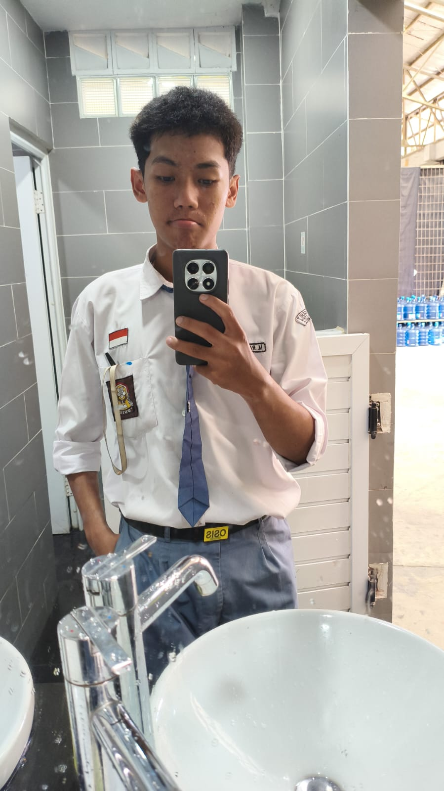
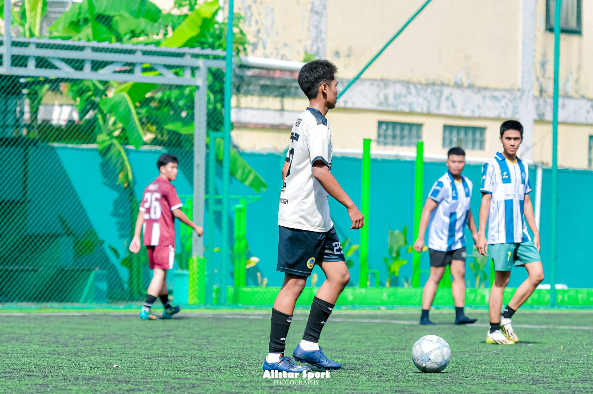

01 / SMART HOME
⌂
Smart Home
Sistem rumah pintar yang menghubungkan perangkat elektronik dan otomasi agar aktivitas sehari-hari lebih praktis.
IT STUDENT · NETWORKING · ARDUINO · IoT
Saya Muhammad Rafie Akbar. Saya belajar teknologi lewat praktik—membangun jaringan, merakit sistem Arduino, mencoba IoT, dan membuat interface web yang terasa modern.

CURIOUS BY DEFAULT.
Saya suka belajar lewat praktik dan eksperimen. Mulai dari merakit perangkat, memahami jaringan, mencoba sensor, membuat otomasi, sampai membangun tampilan web yang nyaman digunakan.
Small systems, real components, useful outcomes.
Sistem rumah pintar yang menghubungkan perangkat elektronik dan otomasi agar aktivitas sehari-hari lebih praktis.
Monitoring dan otomatisasi ruang menggunakan sensor, relay, dan indikator.
↗Arduino Uno + LDR + relay untuk merespons kondisi cahaya.
↗Konsep akses digital berbasis keypad, OLED, buzzer, LED, dan kontrol.
Tempat sampah otomatis berbasis sensor ultrasonik dan servo.
Move. Play. Recharge.

FIELD / ACTIVEAktivitas favorit untuk bergerak aktif, mengisi waktu luang, dan menjaga semangat.
01 / 02Permainan cepat untuk melatih kerja sama dan menikmati waktu bersama teman.
OFFLINE MODE ↗Thanks for visiting my digital space.
Keep learning. Keep building.